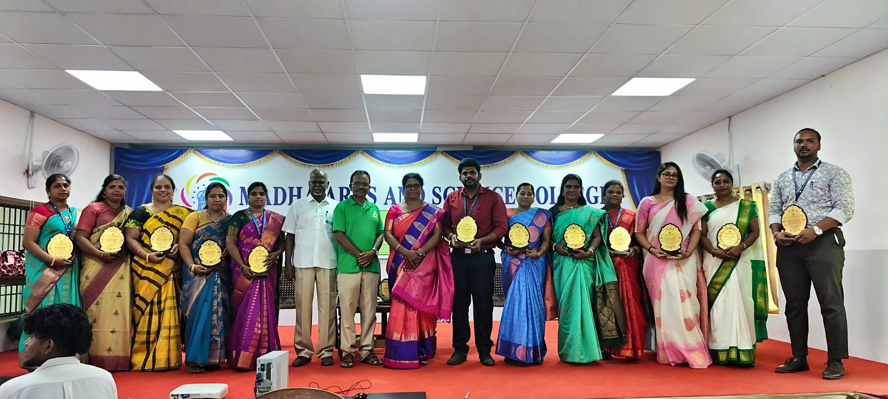
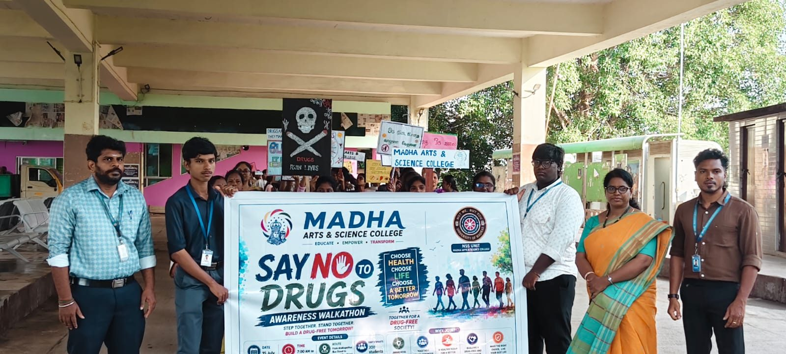

TNPSC coaching programme
A college-based programme with Arivoli’s Academy prepares our students for the TNPSC Group IV, Group II and IIA examinations. It opened in the Loordhammal Auditorium.

Celebrations, sport and service to the community — life at Madha extends well beyond the classroom.
News & events
Seminars, training, field visits and outreach from across our departments and the NSS unit.
A college-based programme with Arivoli’s Academy prepares our students for the TNPSC Group IV, Group II and IIA examinations. It opened in the Loordhammal Auditorium.
Sub-Inspector S. Venkatesh of J1 Saidapet Police Station spoke on cyberbullying, phishing, online fraud and social-media misuse, and on the dangers of drug abuse.
Students saw oyster mushroom cultivation at first hand and visited the rock-cut monuments of Mamallapuram.
A six-day placement programme preparing students for the workplace, with sessions that included the fundamentals of artificial intelligence.
In Pozhichalur, students staged a street play promoting healthy eating and mindful living.
With the Environmentalist Foundation of India, NSS volunteers planted vetiver at Pozhichalur Thangal, where its deep roots help hold the soil.
Students joined volunteers on a Chennai beach for International Coastal Cleanup Day, collecting bags of litter from the shore.
Students visited the Birla Planetarium, the Government Museum, and the Connemara and Anna Centenary libraries.
Students learned about fish farming from the Department of Fisheries and Fishermen Welfare, and toured sericulture and horticulture farms.
Gallery
Select any photo to view it larger.
Social outreach
Social outreach is one of the values at the heart of our mission. Through the NSS unit and their departments, students lead awareness walks, clean up beaches, plant vetiver and take part in community relief work alongside local authorities and partners.
Read our mission